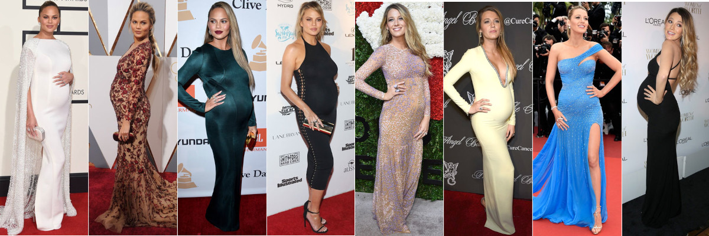
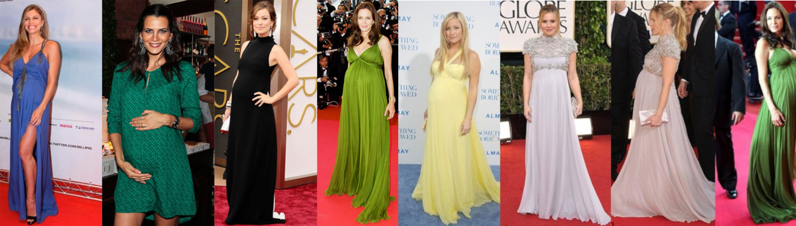
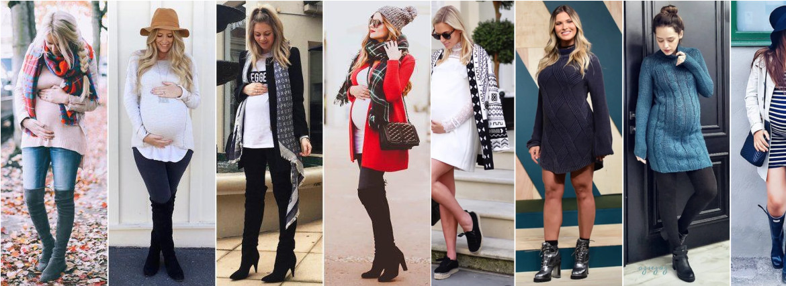
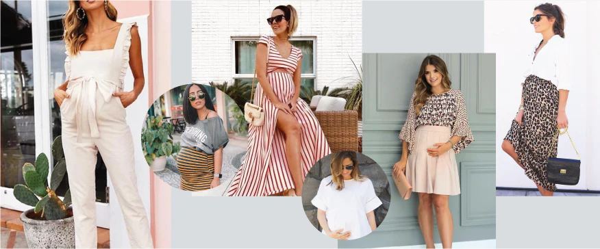

(502) 5513-5773
(502) 5513-5773
3 pasos iniciales para reencontrarte contigo misma después de la maternidad.
Por María Grande
¿Te has convertido en madre y sientes que has “perdido” tu estilo? Aquí te presento 3 pasos iniciales para reencontrarte contigo misma después de la maternidad.
Cualquier cambio en nuestra vida exige una renovación de nuestra imagen, ya sea para seguir el ritmo de la nueva rutina o de los nuevos deseos. En la maternidad no es diferente. Este, quizás, sea el mayor cambio en la vida de la mujer que elige vivir esto. Y con ello, vienen algunos (varios) desarrollos nuevos que cambian nuestra percepción de vestir y, en cierto modo, pueden sofocar nuestros estilos frente a nuestro “nuevo mundo”.

¿Y qué relevancia tiene esto dada la grandeza de crear una vida, colocar a una persona en el mundo y dedicarse a ella? Esto es lo que te cuento aquí:
La sensación de estar perdido frente al espejo, después de tantos cambios (de rutina, de prioridades, de cuerpo, de deseos), afecta mucho nuestra autoestima. La forma en que nos vemos a nosotros mismos es muy importante para sentirnos bien, seguros y cuando está en conflicto, nuestro bienestar se ve directamente afectado.

Sabemos lo difícil que es, inicialmente, separar la figura de la Madre del Tú individual y la mayoría de las mujeres se sienten perdidas en términos de vestimenta y estilo personal después de la maternidad, especialmente en los primeros años de experimentar esto de primera mano. Ya sea en la búsqueda de comodidad, de practicidad, de priorizar la vida de otra persona antes que la propia… el resultado es básicamente el mismo: una persona en conflicto sin reconocerse en lo que viste.
¿Y cómo recuperar tu confianza y estilo? Te traigo algunos ejercicios que puedes empezar ahora mismo.
Paso 1: Abre tu galería de fotos y busca fotos en las que te sentiste bien, hermosa y feliz con lo que vestiste. Marca como favorita tus fotos favoritas con las piezas que volverías a usar y descarta mentalmente aquellas que ya no te representan.

Paso 2: descarga la aplicación Pinterest y crea tu propio tablero. Luego busca looks inspiradores que conecten contigo hoy, con cómo te gustaría vestirte. Sigue llenando tu carpeta con las imágenes que más te representan. Esto ayuda a entrenar tu ojo en tus preferencias.

Paso 3: Aunque vayas a salir poco y sólo por compromisos de “mamá”, siempre que tengas la oportunidad intenta vestirte elegante. Esto mejora tu autoestima, recupera poco a poco tus estilos latentes y te recuerda lo bueno que es sentirse uno mismo.
No parece mucho, pero notarás que ya marca la diferencia en la forma en que te ves a ti mismo en este nuevo momento. Y esto es, poco a poco, despertar y rescatar tus estilos internos.
La maternidad es fantástica pero no te define ni debe limitarte en tu forma de vestir. Y si aún con este paso a paso aún sientes que te falta algo, cuenta con Asesoría de Imagen para ayudarte a redescubrirte a ti mismo, rescatando tu esencia. Nuestra mayor misión es tomar tu mano y guiarte en este viaje de reconexión contigo mismo.